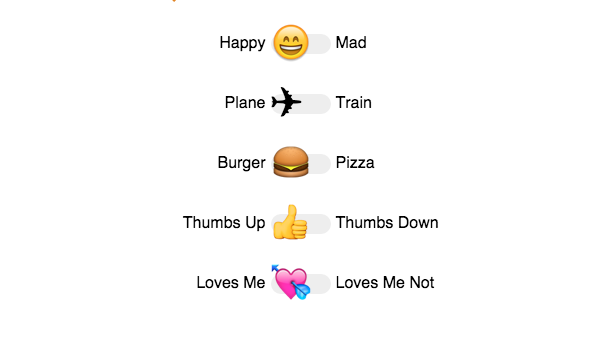

@fukuball
@fukuball
BDD in Laravel: Getting Started with Behat and PhpSpec
我想各位碼農在寫測試時，一定也聽過 BDD (Behavior Driven Development)。使用 BDD 的好處在於讓軟體開發專案中的開發者、測試人員、非技術人員及商業參與者可以一起協作，特別適合用在敏捷式開發專案中，而 BDD 在撰寫測試案例的過程中，其實也一併產生了定義清楚明確的文件，讓專案中的技術及非技術人員減少溝通翻譯的成本。但如何在專案中導入 BDD 呢？本篇文章將告訴你使用 Behat 及 PhpSpec 在 Laravel 中導入 BDD，不過建議看這篇文章時，最好先了解一下什麼是 BDD。
Look, Ma! No NodeJS! – a PHP front end workflow without Node
各位碼農們是否也被近年以光速發展的前端技術如：Gulp, Grunt, NPM, Yeoman 給嚇到尿褲子了呢？為了讓前端工作起來更便利而導入了這些工具，卻常常搞得更糟的碼農們可以看看這篇文章，本篇文章將介紹在 PHP 專案上管理 asset 的一個可行的 NodeJS-free workflow，對的！你沒看錯！就是 NodeJS-free！
Comparing Blade and Twig templates in Laravel
有在使用 Laravel 的碼農們應該會知道在 Laravel 預設使用的樣板引擎是 Blade，但也有些開發者喜歡使用 Twig 而非 Blade，所以究竟為什麼這些人會想要改用 Twig 而非 Blade 呢？這篇文章將比較 Twig 及 Blade 的異同，比如 Twig 比較嚴謹，不允許開發者在樣板中寫 PHP 程式碼，讓開發者可以思考將視圖與商業邏輯分離，而 Blade 雖不建議在樣板中寫 PHP 程式碼，但卻不限制開發者，不過最終怎麼選擇，其實還是看個人喜好或是公司決定採用哪個，沒有一定的答案喔！
延伸閱讀：
Customer Segmentation in Python
我們都知道使用者在我們的網站服務或應用程式上會有不同的使用行為，我們會想要將這些使用行為找出來，理想上他們會是一個一個群體，比如不同年齡的使用者應該會有不同的使用行為。但要如何做呢？直接訂出規則請資料庫工程師幫忙撈資料出來？在機器學習上我們不會用人為的方式來界定群題，而是讓機器去從資料中學習出群體，本篇文章使用了 K-Means 演算法來實現找出使用者分群的過程，算是一個很入門的機器學習技巧。
延伸閱讀：
林軒田教授機器學習基石 Machine Learning Foundations 第三講 學習筆記
本篇文章整理了台灣大學林軒田教授所教授的機器學習基石（Machine Learning Foundations）課程的第三講，主要內容是介紹各種機器學習方法，以前念論文的時候看到這些名詞都會覺得高深莫測，但其實這各式各樣的機器學習方法都是從最基礎的核心變化而來，所以不要被嚇到。了解各種機器學習方法的輸入輸出對於日後面對一些問題的時候，我們才能夠知道要挑選什麼機器學習方法來解決問題。
@adamp33
前端工程師的「主流」工具組，你用過幾個？
前端工具百百種，許多工具也相當短命，選擇一個穩定而且使用族群大、有活躍社群討論的工具是很重要的參考指標。英國的前端工程師 Ashley Nolan 在他的部落格發起調查，看看大家普遍都用哪些工具，可以從這樣的抽樣調查看出前端流行的趨勢。其中在框架與函式庫類，jQuery 不意外使用率最高超過 9 成，有趣的是近三年火紅的 Angular 和 React 其實使用率並不高，真正使用在專案的只有 15.42% 和 8.14%，不少人僅止於聽過或簡單玩過。
- 有 58.91% 的前端工程師不寫 JavaScript unit test。
- 51.53% 的人沒在用任何 module 管理、黏合工具（Module Bundlers, e.g. requireJS）。
- 有 11.13% 的前端工程師寫 native JavaScript。
Chrome 已經開始支援 Service Worker
Service Worker 很可能是 web app 改變以 native app 為主流趨勢的一項新標準。它不僅讓 web app 可以透過 JavaScript 接收 Push Notification，還可以管理 XHR 和 cache 機制，大大提升了效能和伺服器的負擔。如果還沒玩過可以試試看。
前端工程師如何跟上新技術？
寫過《Professional JavaScript for Web Developers》 和 《High Performance JavaScript》的 JavaScript 大神 Nichloas Zakas 最近也回應了 PPK 大神的戰文 "Stop pushing the web forward"，對於日新月異的前端技術提出看法。
不過更值得一看的觀點是，Zakas 認為現在接近氾濫的前端工具（泛指框架、函式庫、雜七雜八的其他東西）只要知道其大致功用就好（be aware of things at a high-level ），直到你真的需要用的時候再深入瞭解，這樣可以避免不必要的「新技術疲乏感」（Innovation fatigue）和焦慮，畢竟這些新東西很快就會經過幾輪篩選，過幾年就跟不上了，到時候會有更適合的新技術來取代，人的時間有限，有需要再學習就可以，把根基打好才是最重要的。
許多前端工程師都有遇到的這樣的焦慮，你有嗎？不妨參考 Zakas 的建議。
Chrome v45 開發者工具新功能
原本只在 Chrome Canary 的錄製分鏡圖（film strip） 功能，現在正式在 Chrome 第 45 版出現。這功能一開始是 WebPageTest 的賣點，讓開發者以分鏡圖來看內容的載入、顯示狀況，對於提升「關鍵轉譯路徑」（critical rendering path） 效能有很大的幫助。

純 CSS 的 emoji 開關
由於現在主流 OS 都已經支援表情符號 emoji，只要透過特殊的 unicode 就可以叫出 emoji 圖案，CSS tricks 上就有神人突發奇想把 emoji 做成開關，非常有趣。也可以學習如何只用 input[type="checkbox"] 加上 <label> ，只靠 CSS、不用 JavaScript 就可以做出兩種狀態的按鈕。
 @wancw
@wancw
5 Questions Every Unit Test Must Answer
TDD/BDD 到底有沒有效是個吵不完的問題；但無論如何沒有測試是非常危險的，特別是單元測試。
問題是 Unit Test 該怎麼寫才算好？把一個 component 所有 function 都呼叫過一遍就夠了嗎？作者提出一些方針來幫助你寫出有用的單元測試。（當然他也順便鼓吹一下 TDD 的優點，可以參考一下。）
Telling stories with your Git history
你數個月後回頭來看 commit log 能記得當初發生了什麼事情嗎？摘要情境與事件才是 log 的價值所在啊，不然大家光看 diff 就好了。
這邊文章列出幾點技巧讓你的 log 更好讀：
- Atomic commits
- Useful commit messages
- Revise history before sharing
- Single purpose branches
- Keep your history linear
How To Ask Questions The Smart Way
〈提問的智慧〉，一篇值得多看幾次的舊文。看完它能讓你在 StackOverflow 上發問不會被當小白，光這點就很值得了。
（內附正體中文翻譯連結。）
Highland.js
Reactive Programming 把一連串 event 當成串流，然後以 filter、map、reduce 等方式來處理。Highland.js 就是一套以 Node.js 現成的 stream API 來實現這概念的 library。
另外推薦 Stream Handbook ，不只詳細說明 Node.js 的 stream API 還介紹很多 stream 化的 library 案例。
Random Cool Stuff
The Grid
Google 的無人自動車，好啊！Amazon 的無人機快遞，好啊！我需要更多的人工智能，嗷嗷嗷！
如果連網站都可以被自動生成呢？
The Grid 透過 AI 跟機器學習分析你發佈的文字、圖片、影片後自動生成網頁版型。
看起來目標對象是那些非網路型態的公司在網路上的官方形象網站，這些案子通常都不是太有趣，因此各位 Web Developer 們也可以從細瑣無意義的勞動中解放啦！可是會變窮？那你就套完 The Grid 再賣給他嘛！
現在服務還未正式開放，看了一下一些內部測試者建立的頁面也都還不是很完整，但總之這是很有趣的方向，而且介紹影片的旁白聲線太性感了。
由 @saiday 分享